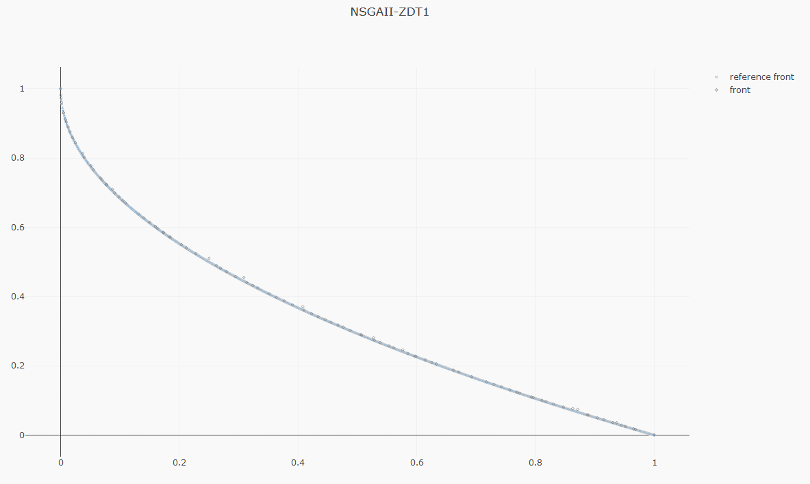
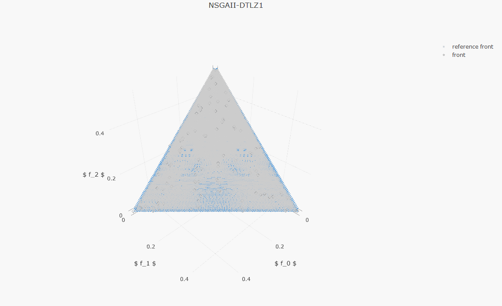
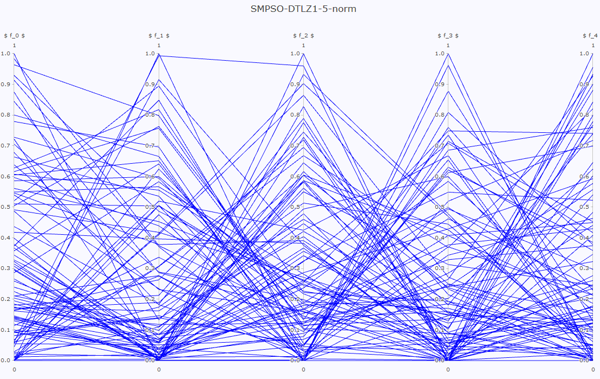
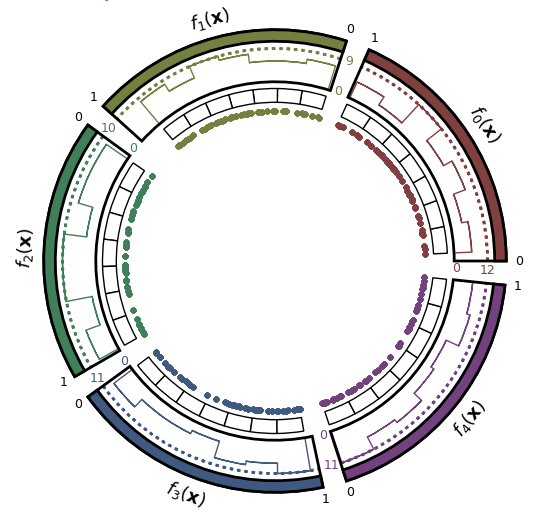

Front visualization¶
The jmetal.lab.visualization submodule contains several classes useful for plotting solutions.
jMetalPy includes three types of visualization charts: static, interactive and streaming.
Static plots¶
It is possible to visualize the final front approximation by using the Plot class:
from jmetal.lab.visualization import Plot
plot_front = Plot(title='Pareto front approximation', axis_labels=['x', 'y'])
plot_front.plot(front, label='NSGAII-ZDT1')
Note
Static charts can be shown on the screen or stored in a file by setting the filename.
For problems with two and three objectives, the figure produced is a scatter plot; for problems with more than three objectives, a parallel coordinates plot is used. Note that any arbitrary number of fronts can be plotted for comparison purposes:
plot_front = Plot(title='Pareto front approximation', axis_labels=['x', 'y'])
plot_front.plot([front1, front2], label=['zdt1', 'zdt2'], filename='output', format='eps')



API¶
plotting
¶
Plot(title='Pareto front approximation', reference_front=None, reference_point=None, axis_labels=None)
¶
:param title: Title of the graph. :param axis_labels: List of axis labels. :param reference_point: Reference point (e.g., [0.4, 1.2]). :param reference_front: Reference Pareto front (if any) as solutions.
Source code in src/jmetal/lab/visualization/plotting.py
get_points(solutions)
staticmethod
¶
Get points for each solution of the front.
:param solutions: List of solutions. :return: Pandas dataframe with one column for each objective and one row for each solution.
Source code in src/jmetal/lab/visualization/plotting.py
plot(front, label='', normalize=False, filename=None, format='eps')
¶
Plot any arbitrary number of fronts in 2D, 3D or p-coords.
:param front: Pareto front or a list of them. :param label: Pareto front title or a list of them. :param normalize: If True, normalize data (for p-coords). :param filename: Output filename. :param format: Output file format.
Source code in src/jmetal/lab/visualization/plotting.py
two_dim(fronts, labels=None, filename=None, format='eps')
¶
Plot any arbitrary number of fronts in 2D.
:param fronts: List of fronts (containing solutions). :param labels: List of fronts title (if any). :param filename: Output filename.
Source code in src/jmetal/lab/visualization/plotting.py
three_dim(fronts, labels=None, filename=None, format='eps')
¶
Plot any arbitrary number of fronts in 3D.
:param fronts: List of fronts (containing solutions). :param labels: List of fronts title (if any). :param filename: Output filename.
Source code in src/jmetal/lab/visualization/plotting.py
pcoords(fronts, normalize=False, filename=None, format='eps')
¶
Plot any arbitrary number of fronts in parallel coordinates.
:param fronts: List of fronts (containing solutions). :param filename: Output filename.
Source code in src/jmetal/lab/visualization/plotting.py
Interactive plots¶
This kind of plot is interactive, in the sense that every solution can be manipulated (e.g., actions such as zoom, selecting part of the graph, or clicking on a point to see its objective values are allowed).
plot_front = InteractivePlot(title='Pareto front approximation')
plot_front.plot(front, label='NSGAII-ZDT1', filename='NSGAII-ZDT1-interactive')
API¶
interactive
¶
InteractivePlot(title='Pareto front approximation', reference_front=None, reference_point=None, axis_labels=None)
¶
Bases: Plot
Source code in src/jmetal/lab/visualization/interactive.py
plot(front, label=None, normalize=False, filename=None, format='HTML')
¶
Plot a front of solutions (2D, 3D or parallel coordinates).
:param front: List of solutions. :param label: Front name. :param normalize: Normalize the input front between 0 and 1 (for problems with more than 3 objectives). :param filename: Output filename.
Source code in src/jmetal/lab/visualization/interactive.py
export_to_html(filename)
¶
Export the graph to an interactive HTML (solutions can be selected to show some metadata).
:param filename: Output file name. :return: Script as string.
Source code in src/jmetal/lab/visualization/interactive.py
export_to_div(filename=None, include_plotlyjs=False)
¶
Export as a div for embedding the graph in an HTML file.
:param filename: Output file name (if desired, default to None). :param include_plotlyjs: If True, include plot.ly JS script (default to False). :return: Script as string.
Source code in src/jmetal/lab/visualization/interactive.py
Streaming plots¶
The visualizer observer displays the front in real-time (note it only works for problems with two and three objectives) during the execution of multi-objective algorithms; this can be useful to observe the evolution of the Pareto front approximation:
from jmetal.util.observer import VisualizerObserver
algorithm.observable.register(observer=VisualizerObserver(reference_front=problem.reference_front))
API¶
streaming
¶
StreamingPlot(plot_title='Pareto front approximation', reference_front=None, reference_point=None, axis_labels=None)
¶
:param plot_title: Title of the graph. :param axis_labels: List of axis labels. :param reference_point: Reference point (e.g., [0.4, 1.2]). :param reference_front: Reference Pareto front (if any) as solutions.
Source code in src/jmetal/lab/visualization/streaming.py
Chord plot¶

API¶
chord_plot
¶
Posterior plot¶
API¶
posterior
¶
plot_posterior(sample, higher_is_better=False, min_points_per_hexbin=2, alg_names=None, filename='posterior.eps')
¶
Plots the sample from posterior distribution of a Bayesian statistical test.
Parameters:
| Name | Type | Description | Default |
|---|---|---|---|
sample
|
DataFrame | ndarray
|
An (n x 3) array or DataFrame containing the probabilities. |
required |
alg_names
|
list
|
Names of the algorithms under evaluation. Defaults to |
None
|
Returns:
| Type | Description |
|---|---|
Figure
|
The matplotlib Figure. |
Source code in src/jmetal/lab/visualization/posterior.py
10 11 12 13 14 15 16 17 18 19 20 21 22 23 24 25 26 27 28 29 30 31 32 33 34 35 36 37 38 39 40 41 42 43 44 45 46 47 48 49 50 51 52 53 54 55 56 57 58 59 60 61 62 63 64 65 66 67 68 69 70 71 72 73 74 75 76 77 78 79 80 81 82 83 84 85 86 87 88 89 90 91 92 93 94 95 96 97 98 99 100 101 102 103 104 105 106 107 108 109 110 111 112 113 114 115 116 117 118 119 120 121 122 123 | |